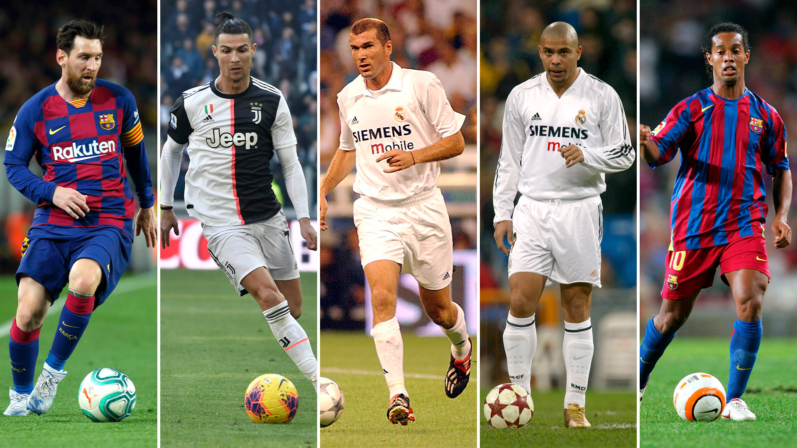

Mejores jugadores del mundo
Pàgina amb imatges, taules i llistes
Jugadores:

Nombres
| messi |
cristiano ronaldo |
| zidane |
ronaldo nazario |
ronaldhino |
Trofeos personales:
- Messi: 8 balones de oro, 6 botas de oro
- Cristiano: 5 balones de oro, 5 botas de oro
- Zidane: 1 mundial, una euorocopa
- Nazario: 2 munidales, 1 copa america
- Ronaldhino: 1 mundial, 1 supercopa
Equipos que han jugado:
- Messi: FC Barcelona(2004-2021), Paris Saint-Germain(2021-2023), Inter Miami(2023-presente)
- Ronaldo: Sporting C.P(2002-03), Manchester United F.C(2003-09), Real Madrid C.F(2009-18), Juventus F.C(2018-21), Manchester United F.C(2021-22), Al-Nassr(2023-act.)
- Zidane: A.S.Cannes.(1989-92), F.C.Girondins de Burdeos.(1992-96), Juventus F.C.(1996-01), Real Madrid C.F.(2001-06)
- Nazario: Cruzeiro E.C.(1992-94), P.S.V. (1994-96), F.C. Barcelona(1996-97), F.C. Internazionale(1997-02), Real Madrid C.F.(2002-07), A.C. Milan(2007-08), S.C. Corinthians(2009-11)
- Ronaldhino: Paris Saint-Germain (2001-2003), FC Barcelona (2003-2008),AC Milan (2008-2011), Clube de Regatas do Flamengo(2011-2012),Atlético Mineiro(2012-2014),U.S.Salernitana 1919(2014-201)